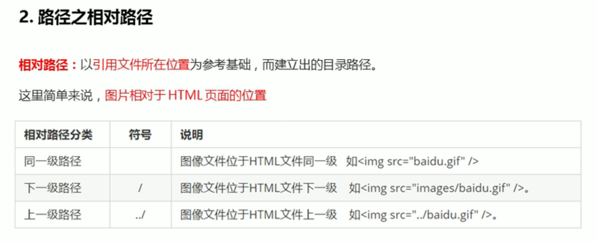
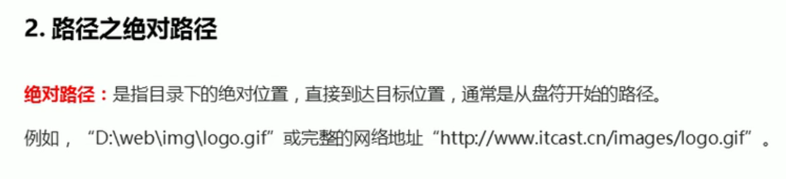
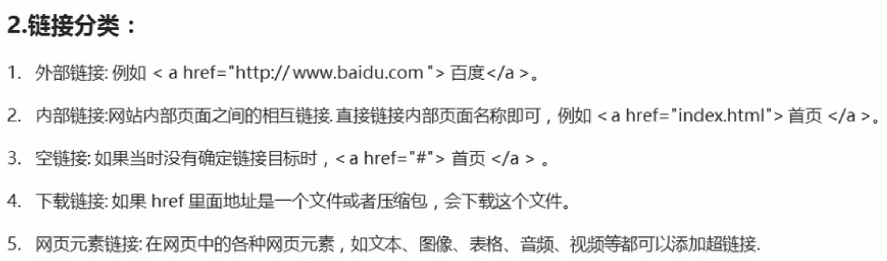

顶部
键盘敲烂，月薪过万
头发祭天，法力无边
奥里给，干了！
我是1级标题
我是2级标题
我是3级标题
我是4级标题
我是5级标题
我是6级标题
我是段落标签
第一段
第一段 第一段 第一段 第一段 第一段 第一段 第一段 第一段 第一段 第一段
第二段
第二段 第二段 第二段 第二段 第二段 第二段 第二段 第二段 第二段 第二段
文本格式化标签
我是加粗的文字
我是加粗的文字
我是倾斜的文字
我是倾斜i的文字
我是删除线
我是删除线
我是下划线
我是下划线
我是div标签我自己独占一行
123
span1
span2
span3
图像标签的使用

替换文本，图像显示不出来的时候用文字替换

替设置图片宽度和高度
替设置图片边框粗细
图片路径


图片超链接
连接的语法格式

链接

外部链接
LAZ的博客
内部链接
内部链接测试
空链接
空链接
网页元素链接

锚点链接
我要去外部链接的笔记
我要去设置图片大小的笔记
返回顶部
特殊字符